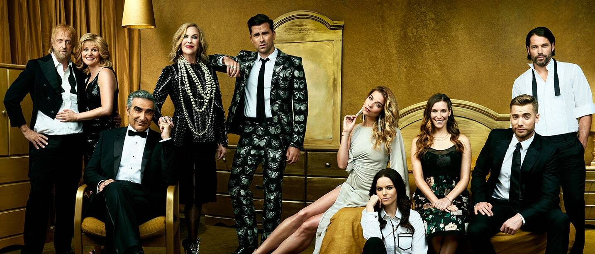

Welcome to Schitt's Creek
Schitt's Creek is a Canadian television sitcom created by Dan and Eugene Levy that aired on CBC Television from January 13, 2015 to April 7, 2020. It consists of 80 episodes spread over six seasons. Produced by Not a Real Company Productions, the series follows the trials and tribulations of the formerly wealthy Rose family when they are forced to relocate to Schitt's Creek, a small town they once purchased as a joke. Now living in a motel, Johnny Rose and Moira Rose—along with their adult children, David and Alexis—must adjust to life without money and with each other.
The series was conceived when Dan Levy wondered how the wealthy families frequently depicted on American reality television would react if they were stripped of all their money. He further developed the series with his father, Eugene, before pitching the series to several networks in Canada and the United States. The series was first sold to CBC Television in Canada and later to Pop TV in the United States, where it debuted on February 11, 2015. Although limited in popularity throughout its first few seasons, the series' appearance on Netflix after its third season is credited for the show's sudden rise in stature, attributed to the "Netflix bump" and a dynamic social media presence.
Schitt's Creek received widespread acclaim, particularly for its writing, humor and acting. The series has won various accolades, including two ACTRA Awards and 18 Canadian Screen Awards. It is the first Canadian comedy series to be nominated for a Critics' Choice Television Award for Best Comedy Series. It also received two Screen Actors Guild Award nominations, including Outstanding Performance by an Ensemble in a Comedy Series and a total of 19 Primetime Emmy Award nominations, including Outstanding Comedy Series. The show received 15 of these nominations for its sixth and final season. O'Hara received both a SAG Award and Primetime Emmy Award nomination for her performance. For its portrayal of LGBTQ+ people, the series won once and was nominated twice for a GLAAD Media Award for Outstanding Comedy Series.
At the 72nd Primetime Emmy Awards, the series' final season swept all seven major comedy awards — Outstanding Comedy Series, Outstanding Writing and Outstanding Directing for Dan Levy (the last shared with Andrew Cividino), and setting a record for winning all four major acting categories (lead actor/actress and supporting actor/actress) for O'Hara, Murphy and both Levys. At the same time, the series set a new record for most Emmy wins by a comedy series in a single season. (Source)